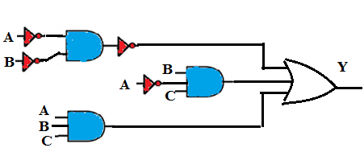

Answer the questions below by referring the diagram shown below:

Q1. For the application shown above, analyse and obtain the simplified algebraic expression for output Y.
A
Y =A'BC + AB
B
Y = A + B
C
Y = ABC + A + BC
D
None of these
Ans is B
Q.2 If the OR gate in above figure is replaced by AND gate, then obtain the expression for output Y.
A
Y = (A + B)(ABC)
B
Y = 1
C
Y = 0
D
Y = (A + B) + (A'BC)
Ans is C
Q3. Refer the figure above: If the AND gates are replaced by OR and vice versa obtain the simplified expression for output Y.
A
Y = AB
B
Y = (A' + B + C)
C
Y = AC
D
Y = A + B
Ans is A
Q4. Analyze the given figure and obtain the simplified logical expression for output Y if all NOT gates are removed.
A
Y = A + B
B
Y = A.B
C
Y = 0.
D
Y = 1
Ans is B
Q 5. The method of logic circuit simplification requires that the logic expression should be in sum-of-product form or product –of-sum form. Which of the following represents the SOP form?
A
Y = A'B + CD' + EF
B
Y= ABC + A'B'
C
Y = A + B'C' +BD
D
All of these
Ans is D